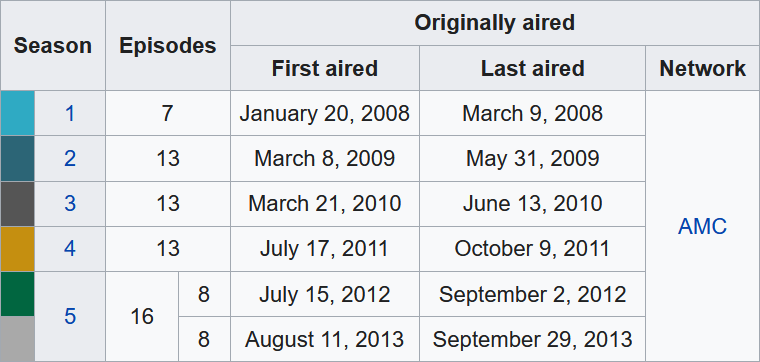

flavors <- c("Cookies & Cream", "Americone Dream (R)", "Bob Marley's 1 Love")
flavors
#> [1] "Cookies & Cream" "Americone Dream (R)" "Bob Marley's 1 Love"Day 1B Practice

Question 1.
- Create a character vector named
flavorsthat contains the following strings and print it:- Cookies & Cream
- Americone Dream (R)
- Bob Marley’s 1 Love
- Use a function to calculate the number of strings in
flavors. - Use another function to calculate the number of characters in each string in
flavors. - Let R know how you feel about ice cream by using a function to either make all the characters in
flavorsuppercase (you LOVE ice cream) or lowercase (you don’t love ice cream).
Click here for the answer key
Answer (a)
Answer (b)
length(flavors) #> [1] 3Answer (c)
nchar(flavors) #> [1] 15 19 19Answer (d)
toupper(flavors) #> [1] "COOKIES & CREAM" "AMERICONE DREAM (R)" "BOB MARLEY'S 1 LOVE" tolower(flavors) #> [1] "cookies & cream" "americone dream (r)" "bob marley's 1 love"
Question 2.
The following table summarizes the season information for the eight seasons of AMC’s Breaking Bad show.
Tidy up this data and save it to a tibble. Decide for yourself how to handle season 5 (should it be a single observation or two?). For the first and last aired dates, just store the year as a number.
Save the tibble you created to a CSV file named “breaking_bad.csv”.

Click here for the answer key
Answer (a)
Version with one observation for the season five parts
library(tidyverse) season <- c(1, 2, 3, 4, 5) episodes <- c(7, 13, 13, 13, 16) first_air <- c(2008, 2009, 2010, 2011, 2012) last_air <- c(2008, 2009, 2010, 2011, 2013) network <- "AMC" breaking_bad <- tibble(season, episodes, first_air, last_air, network) breaking_badVersion with two separate observations for the season five parts
library(tidyverse) season <- c(1, 2, 3, 4, 5.1, 5.2) episodes <- c(7, 13, 13, 13, 8, 8) first_air <- c(2008, 2009, 2010, 2011, 2012, 2013) last_air <- c(2008, 2009, 2010, 2011, 2012, 2013) network <- "AMC" breaking_bad <- tibble(season, episodes, first_air, last_air, network) breaking_badAnswer (b)
write_csv(breaking_bad, "breaking_bad.csv")
Resources
R4DS Chapter 14: Read more about strings
Broman & Woo (2018): Read more about tidy data principles
R4DS Chapter 10: Read more about tibbles and data frames
R4DS Chapter 11: Read more about data reading and writing
Fun Stuff
“Who’s” on First?
A lesson about the importance of strings…
Fundamentals of Tidying
She doesn’t like formatting-as-data either…